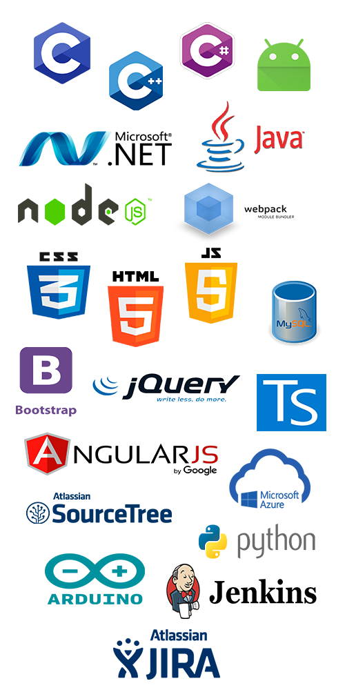
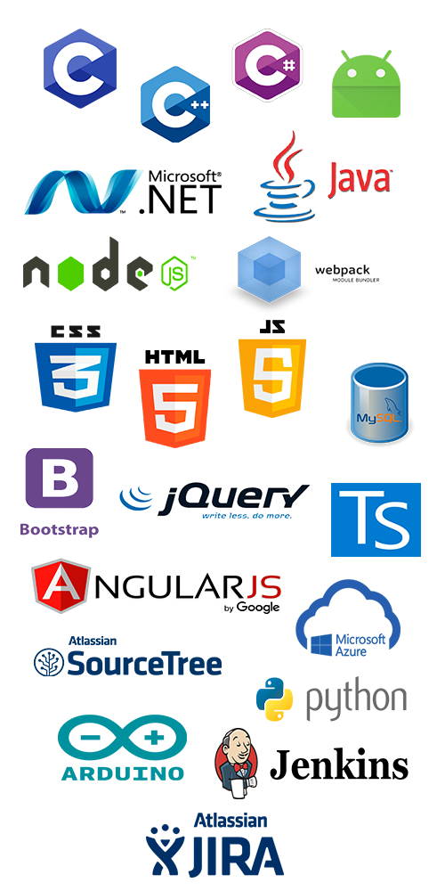
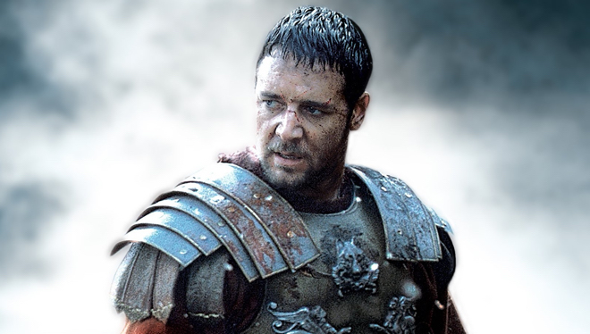
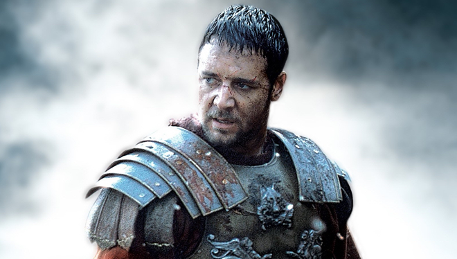

Software Engineer
Full-Stack Developer
Bienvenidos a mi página personal, donde podréis encontrar información sobre mi, mis estudios, cursos, proyectos a los que estoy enganchado y como contactar conmigo.
Contacto Proyectos

Si no sabes quién soy, aquí está tu respuesta. :)
- Soy un apasionado de la aventura, me encanta viajar, probar cosas nuevas, ir a la montaña, a la playa, hacer deporte, eso sí, siempre que tenga tiempo libre para ello. Me considero friki del cine y de las series (Juego de Tronos, Prison Break, Narcos, Breaking Bad...).
- Otra de mis grandes aficiones es la pesca, me encanta esa tranquilidad que transmite estar en la naturaleza escuchando todo tu alrededor. Por supuesto me encanta salir con mis amigos, y sobre todo hablar, pero no me olvido de mi mejor amigo, con el que estoy todos los días y se gana el primer puesto, mi ordenador.
- Me considero afortunado, porque por suerte he encontrado lo que me apasiona que es mi trabajo como Developer, inventar lineas de código de la nada para hacer cosas, ver sus efectos, ver como evolucionan y sobre todo, ver como funcionan correctamente es una satisfacción que solo nosotros entendemos. Por supuesto si esto se hace en equipo la satisfacción es aún mayor.
Y para terminar una cita de Steve Jobs para reflexionar, y que con suerte estoy cumpliendo.
- La única manera de hacer un gran trabajo, es amar lo que haces. Si no lo has encontrado, sigue buscando. No te conformes.
Un teclado, mi pantalla, y una taza de café.


Con esfuerzo y sacrificio esto es lo que conseguí en las aulas.
Grado cursado desde el año 2013 al 2017 en la Escuela Politécnica de Cáceres de la Universidad de Extremadura. Tan solo me queda para terminar el Trabajo de Fin de Grado del cual me encuentro matriculado. Tengo un expediente académico notable con una puntuacion de 7,64 sobre 10, además del algunas mátriculas de honor.


Cursado del año 2015 al 2016 en la Universidad de Parma. Con una puntuación notable de 8.56 sobre 10. Superando asignaturas en una lengua extranjera y pertenecientes a las ramas de telecomunicaciones, electronica e informática, enfocadas al grado en Ingeniería del Software.
Aquí aparecen algunos de los lenguajes de programación junto con herramientas, frameworks, o librerias de los tengo que conocimientos, que han sido adquiridos por experiencia laboral, estudios, o por cursos.
 

Alguno de los proyectos en los que he contribuido.
Actualmente, me encuentro trabajando en Wolters Kluwer (cliente de NETCheck) una empresa del ámbito jurídico, dedicada a la investigación y desarrollo de sistema de información y software para el sector legal, asesorías, financiero y de salud.


Mis aficiones, mis motivaciones, en que gasto mi tiempo.

 



¿Tiene un proyecto y las ideas por las que quiere empezar? ¿Necesitas algún tipo de información en la que pueda ayudar? No lo dude y póngase en contacto conmigo, a través del siguiente formulario, o a través de mi cuenta de Linkedin..